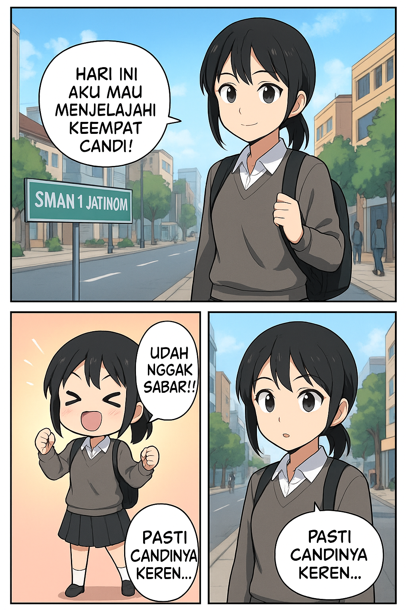
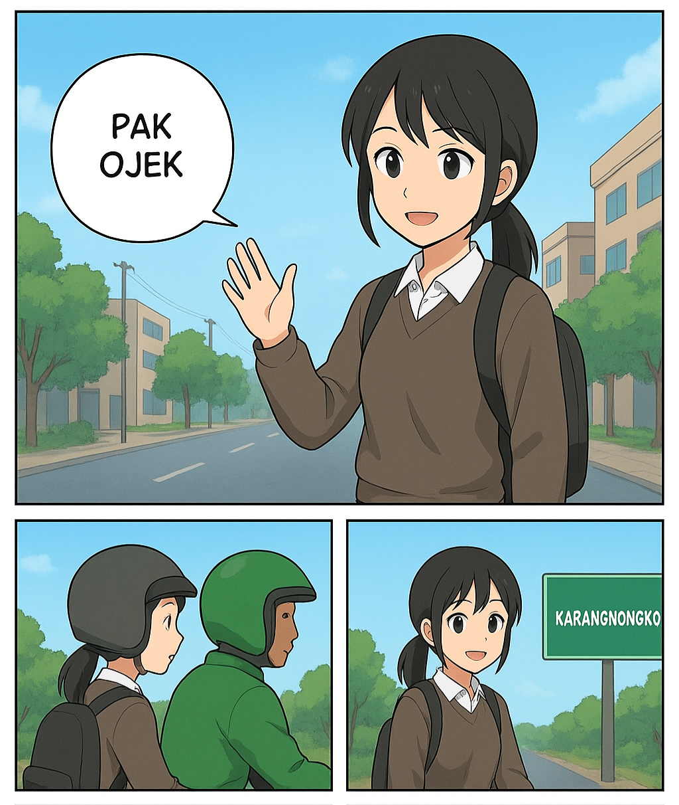
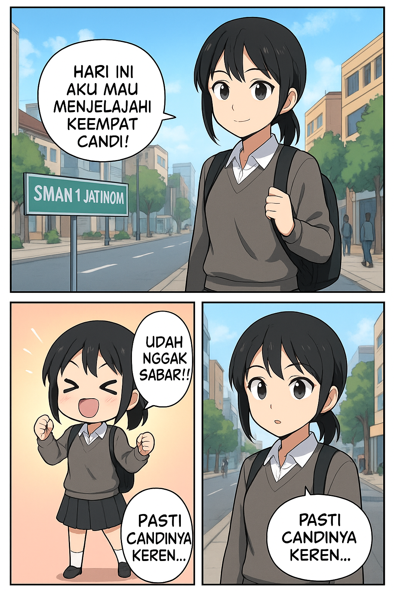
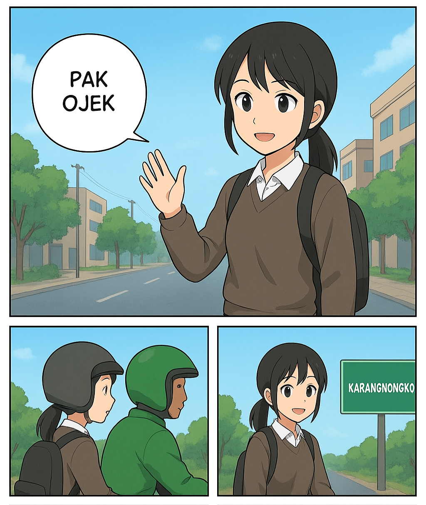


 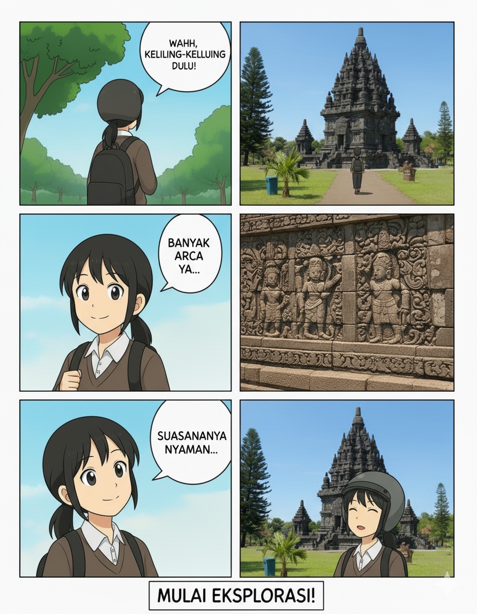
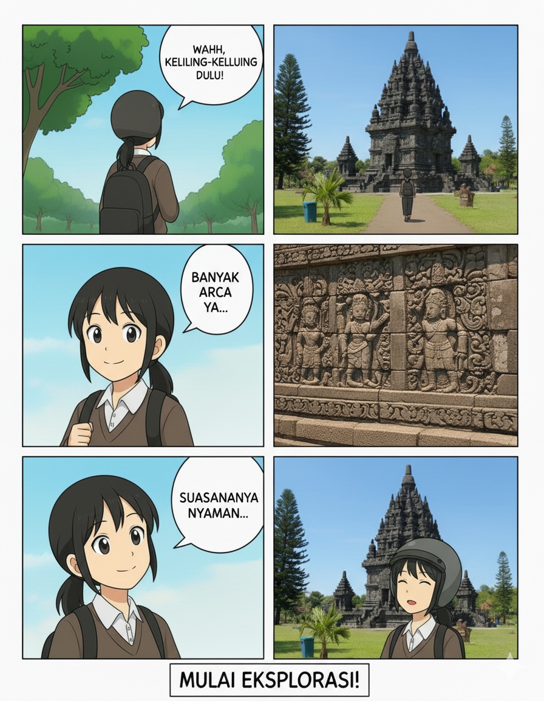
 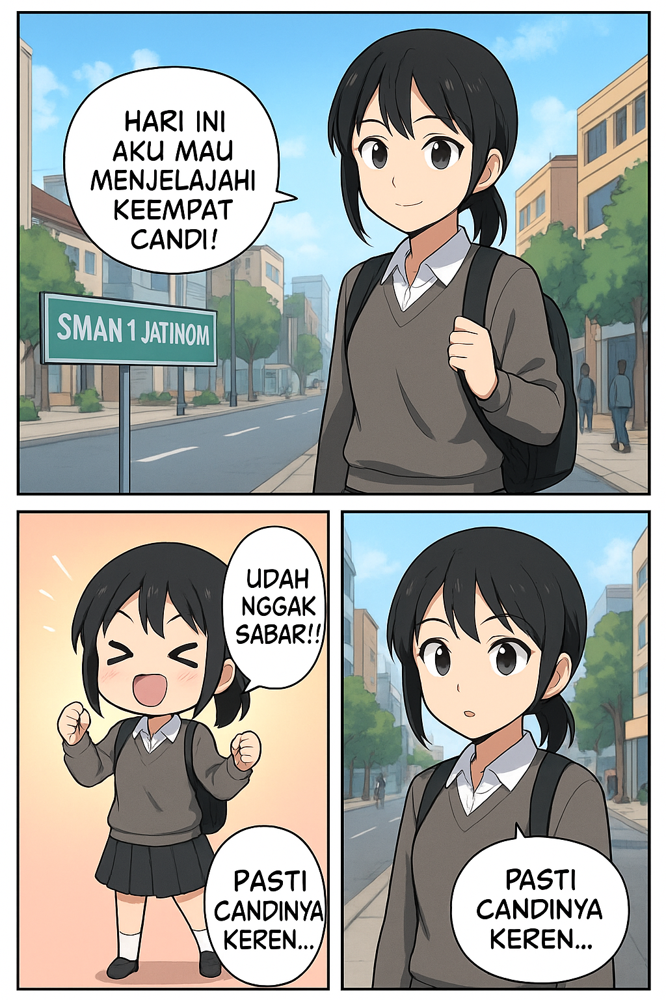
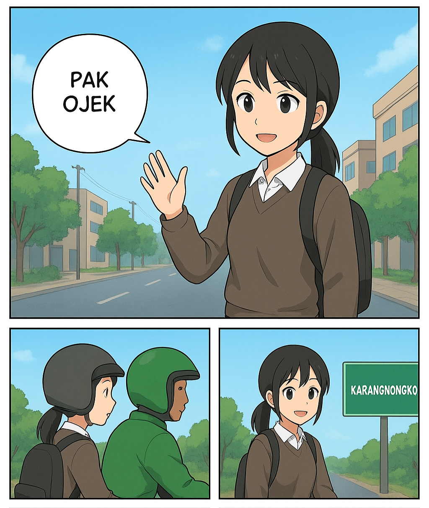
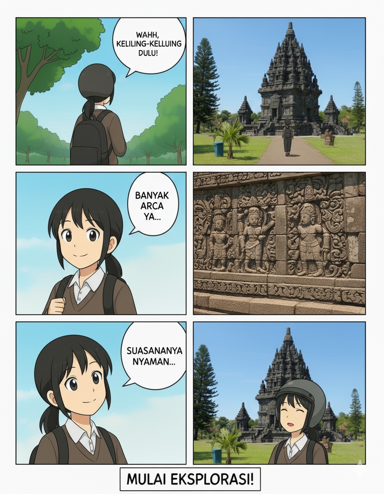
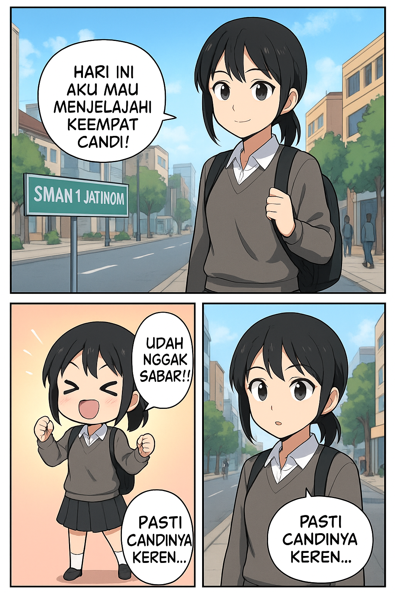
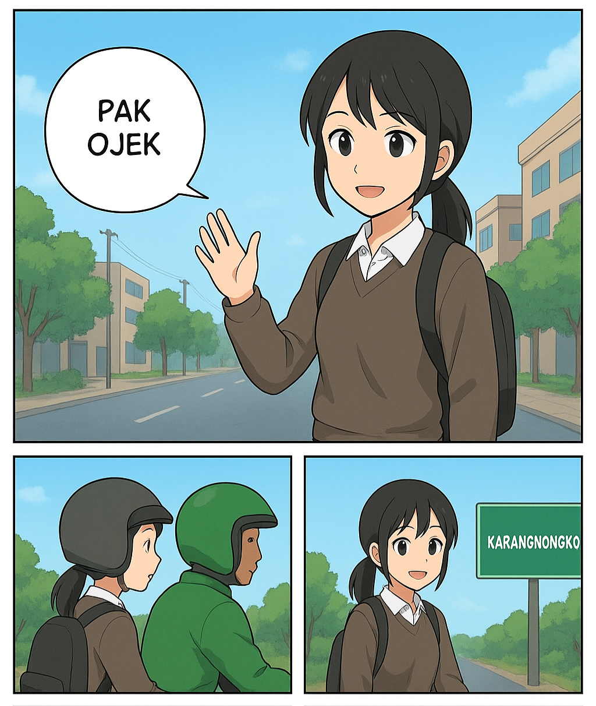
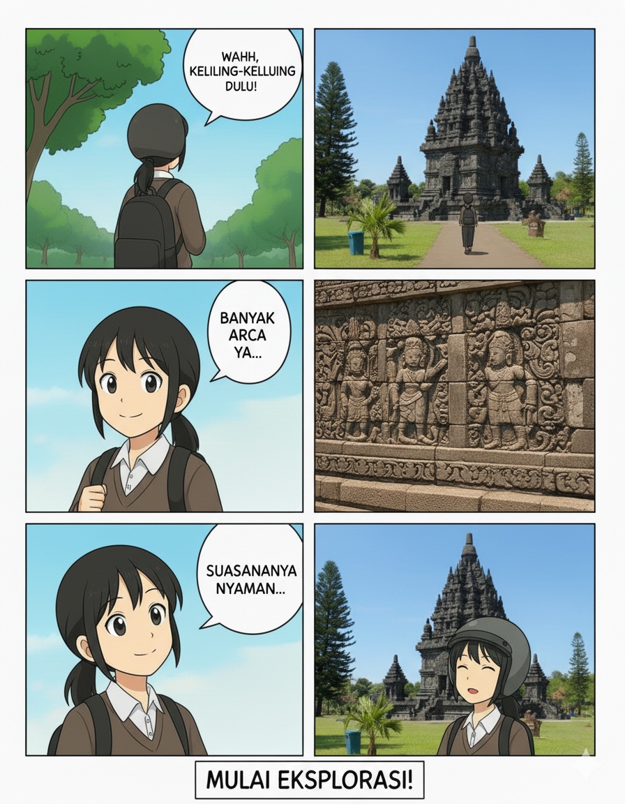
Petualangan dimulai dengan Candi Merak, yang merupakan candi Hindu yang tersembunyi. Dari sini, aku belajar tentang ketenangan dan keunikan arsitektur yang megah meskipun berukuran kecil, membuktikan bahwa keindahan bisa ditemukan di tempat yang tak terduga.
Perjalanan kedua aku yaitu Candi Plaosan, aku merasakan perpaduan budaya yang indah. Sebagai candi Buddha yang dibangun untuk ratu, tempat ini menunjukkan toleransi dan cinta kasih.
Candi terakhir yang aku kunjungi adalah Candi Sojiwan, yang terkenal dengan relief-relief fabelnya yang kaya akan cerita. Melalui candi ini, aku tidak hanya mengagumi arsitektur, tapi juga belajar tentang nilai-nilai moral dan kebijaksanaan yang disampaikan secara turun-temurun melalui kisah-kisah.
Sekian dari perjalananku dari ketiga Candi di Klaten, terima kasih.
—Artha